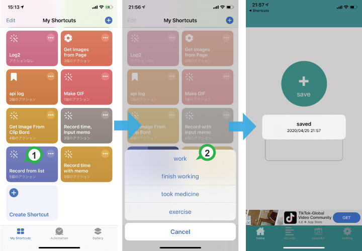

You can create a list of entries you frequently record and simply pick one from the widget or shortcut.
This saves you time because you don’t have to type a memo every time you log something.
Open the Settings app → Shortcuts → enable "Allow Untrusted Shortcuts".
* If this option does not appear on your iOS version, skip this step.
Get the shortcut from the button below.
Get shortcut from here (tap twice)Open the Shortcuts app and find “Record Time from List”. Edit the preset list items to customize them as you like.
The first time you run the shortcut, you will see a message asking for access to the TimeStamp app. Tap Allow / OK.